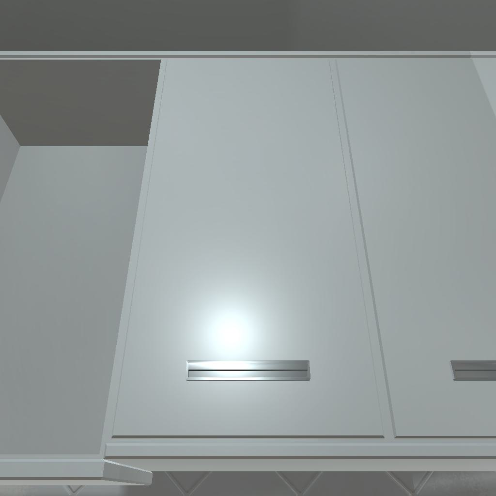

---------------------------------------------------------task: 21---------------------------------------------------------
--------------------------------------------------------------------------------------------------------------------------------------------------------------------
--------------------------------------------------------------------------------------------------------------------------------------------------------------------
Step:--------------------------------------------------------------------------18-------------------------------------------------------------------------------
----------------------------------------
VLM Prompt:
Image1:
Image2:
**Instruction**
1. Analyze the provided images to identify all visible household objects and compare the difference between images (e.h. whether the object is opened or not and taken on hand or not), focusing on those relevant to the task description "put a hot cup in countertop."
2. Use the analysis of images and the task hint "The agent must find an object of the desired type, pick it up, go to a microwave, heat the object with the microwave, then find the correct location to place it, and put it down there. The agent does not need to use the microwave button or open the microwave to heat the object, and the agent just needs to do action that is "heat the object with the microwave"." to answer the question: what is the most reasonable action in the choices for the task description "put a hot cup in countertop"?
3. Decide and write the answer using the template: The answer is: (i): , where i is the real number. If there is no desired object in images, search every place based on **Initial Observation** to find the object. And if no one is exactly correct, choose a similar answer.
**Initial Observation**
You are in the middle of a room. Looking quickly around you, you can see cabinet (1-6), microwave (1), countertop (1-2), coffeemachine (1), toaster (1), sink (1), sinkbasin (1), fridge (1)
**Answer Choices**
(1): go to cabinet 2
(2): go to cabinet 3
(3): go to microwave 1
(4): go to cabinet 4
(5): go to cabinet 5
(6): go to cabinet 6
(7): go to countertop 1
(8): go to coffeemachine 1
(9): go to toaster 1
(10): go to countertop 2
(11): go to sink 1
(12): go to sinkbasin 1
(13): go to fridge 1
(14): open cabinet 1
(15): close cabinet 1
(16): examine cabinet 1
**Answer**
Let's think step by step by following the instructions.
----------------------------------------
----------------------------------------
Original Response:
The task is to "put a hot cup in countertop." Based on the task hint, the agent must find a cup, heat it in the microwave, and then place it on the countertop.
Looking at Image1 and Image2, they are identical and show a closed cabinet. There is no visible cup or any other household object that can be heated in the images. Therefore, we must search for the cup based on the Initial Observation.
Since the agent is in the middle of a room surrounded by cabinets, a microwave, a countertop, a coffee machine, a toaster, a sink, a sink basin, and a fridge, the first step is to find a cup. It is reasonable to assume that a cup might be in a cabinet or on a countertop.
The most reasonable action from the choices given for the task description "put a hot cup in countertop" is to find a cup. Since we cannot see inside the cabinets, we should search inside them. Starting with cabinet closest to the microwave would be most efficient as we will need to use the microwave next. Therefore, the most reasonable action is:
The answer is: (1): go to cabinet 2
----------------------------------------
----------------------------------------
>>> Refine Original VLM Response and Get Pure Action: go to cabinet 2
----------------------------------------
-----------------------------------------------------------------
Running time: 9.338119745254517 seconds
Total Money: 10.883080000000001
-----------------------------------------------------------------
-----------------------------------------------------------------
Text Observation:You arrive at loc 1. The cabinet 2 is open. On the cabinet 2, you see nothing.
-----------------------------------------------------------------
UNSUCCEED